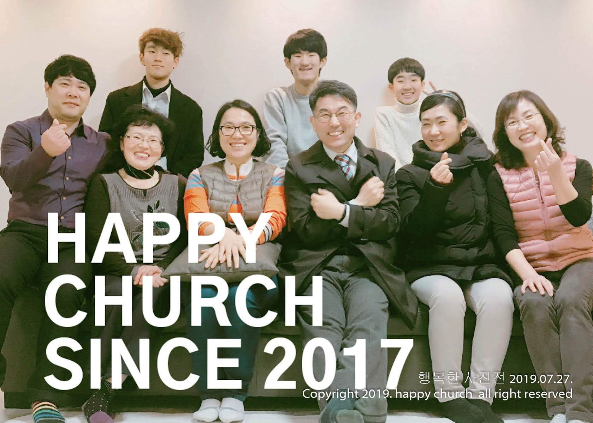
행복한 사진전
2019년 7월 27일, 성도들과 함께 주님 안에서 누리는 행복을 사진에 담았습니다.
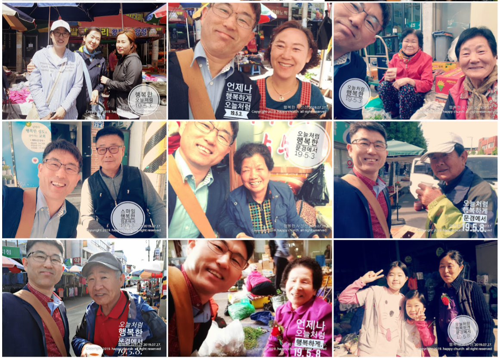
이웃과 함께하는 기쁨
문경 시장 상인분들과 따뜻한 정을 나누며 복음을 전하는 행복한 현장입니다.
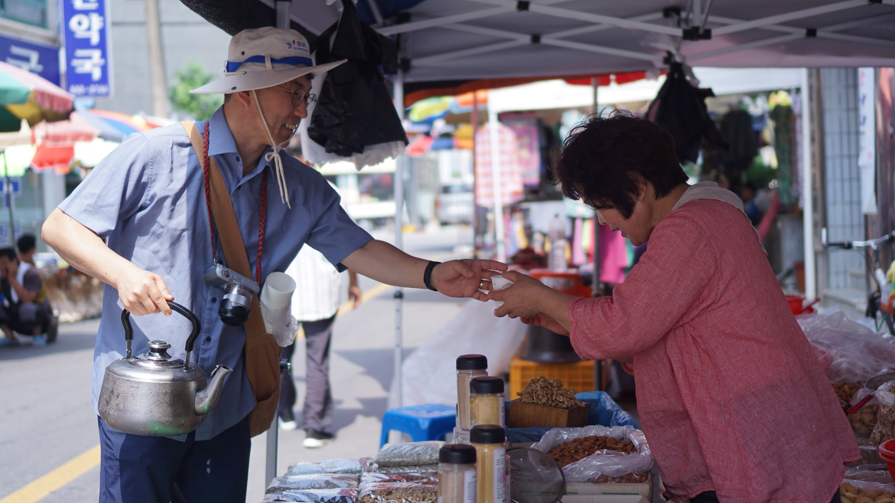
사랑의 차 한 잔
7년 동안 한결같이 이웃의 곁을 지키며 예수님의 사랑을 차 한 잔에 담아 전합니다.
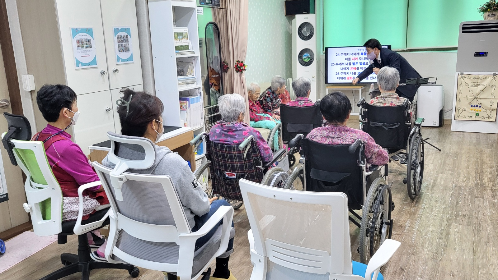
요양원 예배 사역
요양시설 어르신들과 함께 찬양하며 주님의 평강을 나누는 은혜로운 시간입니다.
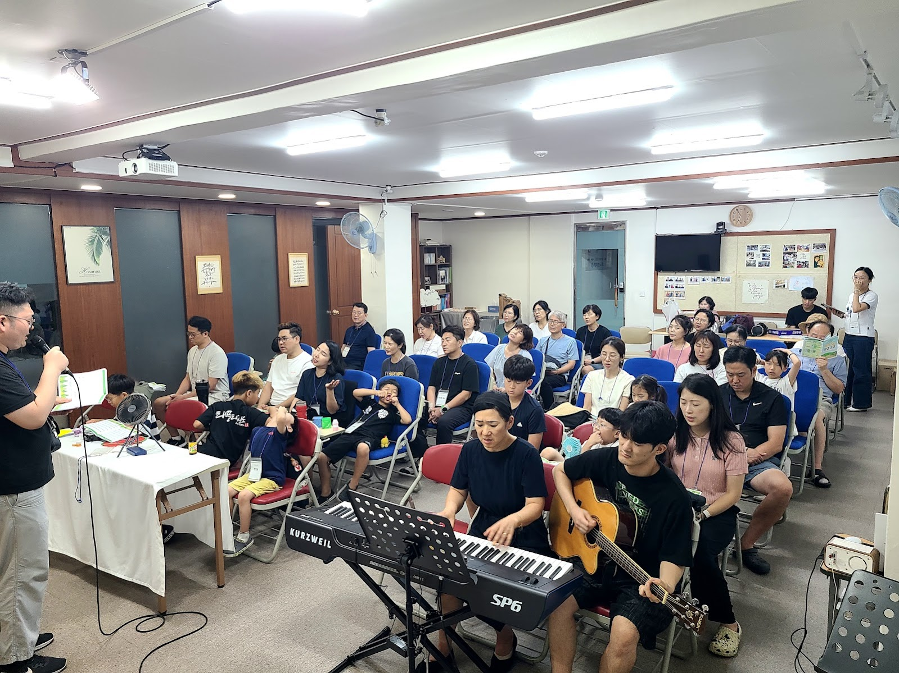
믿음의 여정
날마다 예수 그리스도를 닮아가는 성도들의 소중한 모습들입니다.
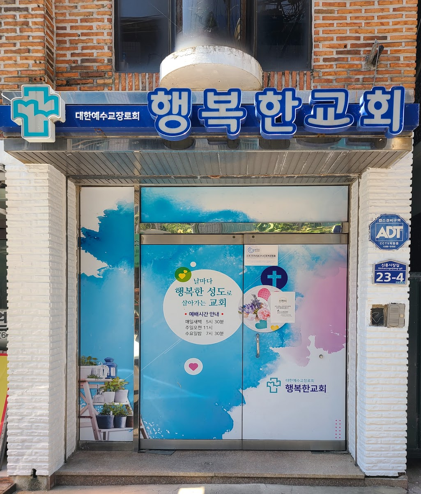
성도의 교제
주님 안에서 한 가족 된 성도들이 사랑으로 하나 되는 시간입니다.
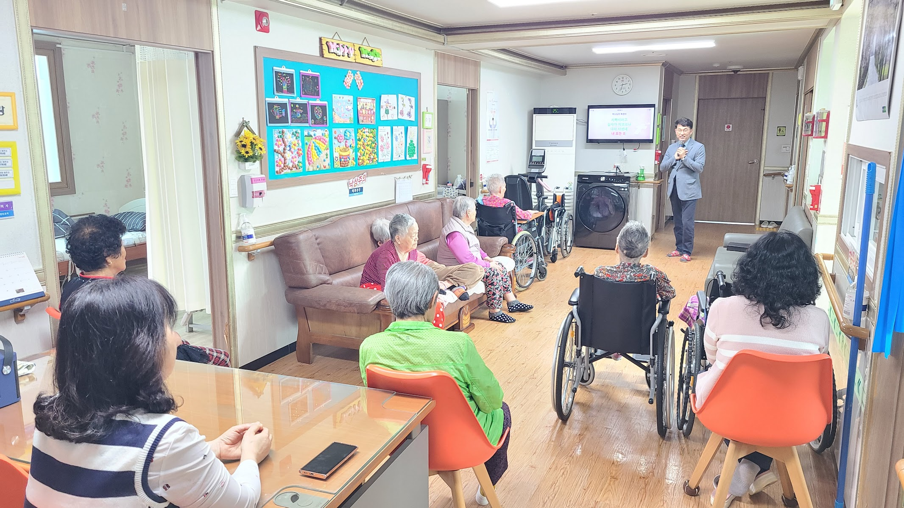
기도의 불꽃
문경 땅의 복음화를 위해 간절히 기도하는 행복한교회 공동체입니다.
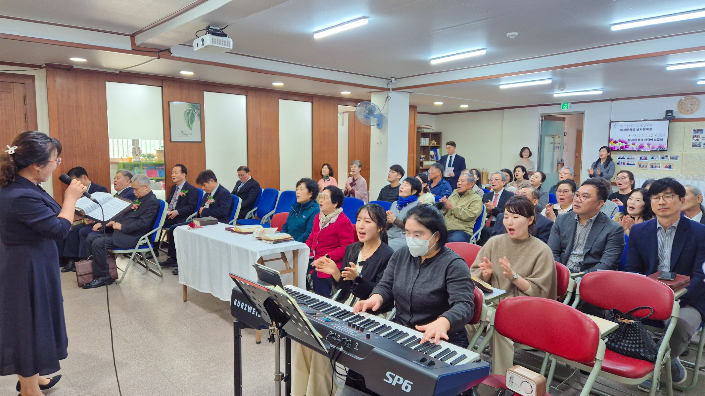
복음의 증인
세상을 향해 나아가 주님의 사랑을 실천하는 발걸음입니다.
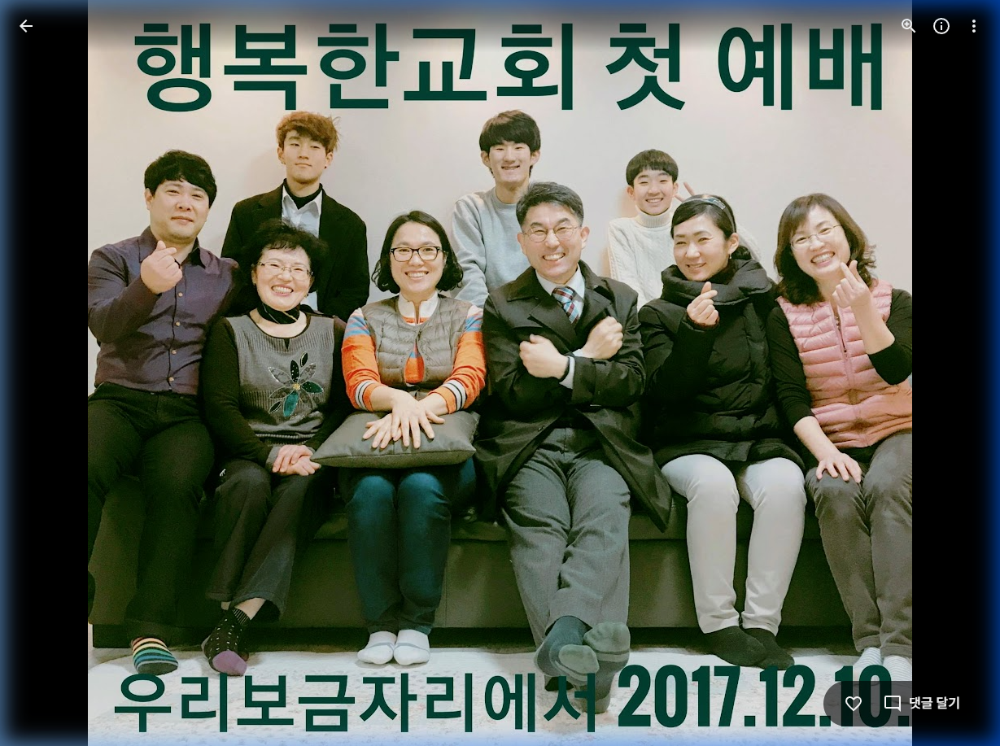
설립의 감격
2017년 12월 10일, 하나님의 인도하심으로 시작된 행복한교회 첫 예배의 모습입니다.

연합과 선교
2018년 여름, 늘사랑교회 전도팀과 함께 문경 땅에 복음을 전했던 뜨거운 현장입니다.

시장 상인 섬김
7년 동안 한결같이 시장 상인분들에게 시원한 보리차와 따뜻한 차로 사랑을 전해왔습니다.

사랑의 실천
'우리 보금자리' 요양원에서 어르신들을 섬기며 주님의 사랑을 나누는 소중한 시간입니다.
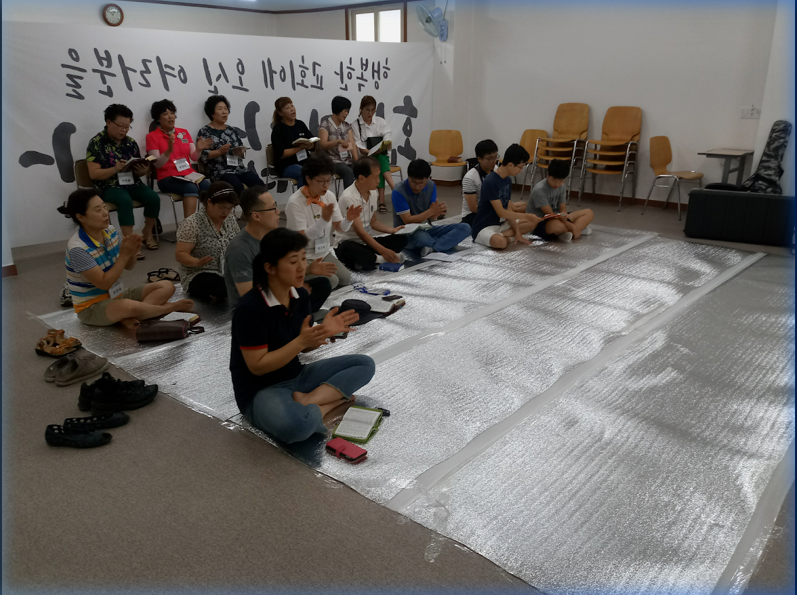
말씀과 교제
살아있는 하나님의 말씀을 배우고 성도 간의 깊은 교제를 나누는 행복한 공동체입니다.
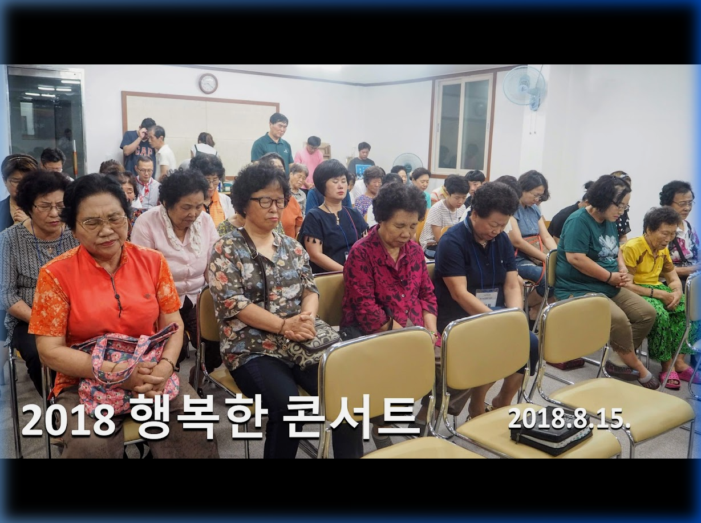
찬양과 축제
2018년 '행복한 콘서트'를 통해 지역 주민들과 함께 기쁨을 나누었던 음악회 현장입니다.